Scroll to zoom · Drag to pan · Click image to cycle zoom · Esc to close
| Datum | 2026-05-21 |
| Status | Internt utkast för granskning |
| Avsedd mottagare | ESSA TWR ledning och WS |
| Nästa steg | Intern granskning → SOP → AIP-publicering |
Antalet helikoptrar baserade på ESSA har ökat markant de senaste åren. Polisens helikopterenhet (POL) och ambulanshelikoptern (DFL) opererar numera regelbundet från Apron L – "Patria" – och volymen VFR-rörelser inom CTR:n är påtagligt högre än tidigare. En ny FATO 07/25 är under uppförande vid Patria och väntas tas i drift under 2026, vilket ytterligare formaliserar helikopteroperationerna på platsen.
I dagsläget saknas publicerade standardrutter för helikoptertrafiken. Det innebär att varje rörelse kräver en individuellt anpassad klarering – med tillhörande samordning mellan TWR och, ofta, APP för att hitta luckor i IFR-sekvenserna. Med ökande volymer är detta en växande belastning.
Offentlig data av flygningar i Arlandas kontrollzon över 10 veckor (2a mars – 10e maj 2026) som omfattar totalt 517 rörelser (i snitt 8 per dag, med ett max på 16 rörelser under en enskild dag) används för att analysera trafikflöden:
| Operatör | Totalt | Till/Från PATRIA (Ramp L) |
|---|---|---|
| POL (Polis) | 282 | 282 |
| DFL (Mediflight) | 199 | 61 |
| Övriga VFR:er | 36 | 3 |
Dokumentet analyserar dessa trafikmönster och jämför med hur tre liknande flygplatser – ENGM Oslo, EFHK Helsingfors och LFMN Nice – hanterar och dokumenterar sin helikoptertrafik. Baserat på detta läggs ett konkret förslag fram på standardiserade rutter, waypoints och procedurer anpassade för ESSA, som underlag inför en eventuell publicering i AIP Sverige.
Tre aktörsgrupper dominerar VFR-trafiken inom ESSA CTR:
Polisen – Nationellt Forensiskt Centrum (NFC)
282 rörelser under analysperioden, nästan samtliga med Apron L / Patria som start- eller destinationspunkt. Polisen är i praktiken baserad på Patria och flyger till/från CTR-gränsen i ett fåtal återkommande korridorer.
DFL – Ambulanshelikopter (HEMS)
199 rörelser totalt. 61 av dessa har Patria som start- eller destinationspunkt. Resterande 138 rörelser är genomfarter eller flygningar till/från andra destinationer utan koppling till Patria.
Övriga VFR
36 rörelser, varav 3 med Patria som start/destination. Merparten är genomfarter eller enstaka besök på andra delar av flygplatsen.
Fördelning av 517 VFR-rörelser — 2 mars till 10 maj 2026
Helikoptrarna opererar primärt till och från Apron L på sydvästra delen av Arlanda, känt som "Patria". Platsen fungerar i dag utan formellt publicerad FATO eller publicerade rutter i AIP – operationerna sker på basis av individuella klareringar och informella rutiner.
En ny FATO 07/25 är under uppförande i anslutning till Apron L och förväntas tas i drift under 2026. Ibruktagandet är ett naturligt tillfälle att formalisera de rutter och procedurer som länge saknats.
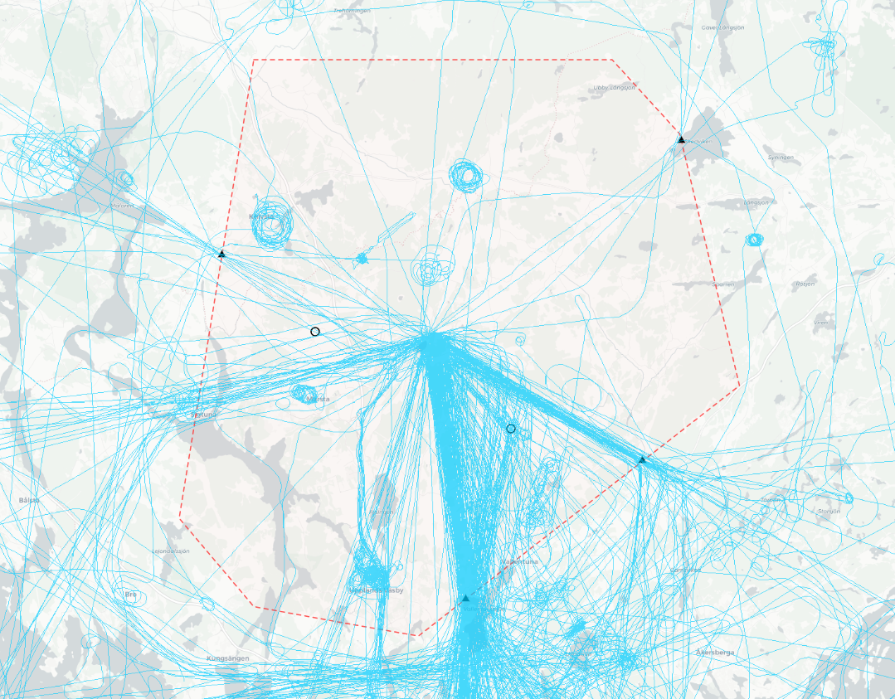
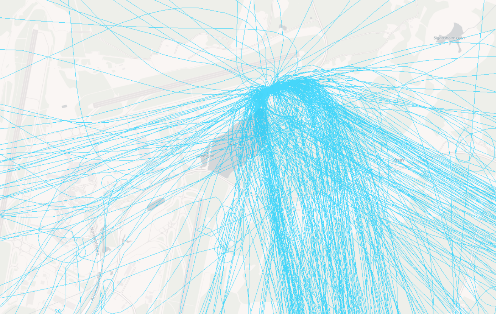
Rörelsemönstret är enhetligt och tydligt. Spårloggarna visar tre huvudsakliga korridorer:
Därutöver syns tre mindre korridorer:
Zoomen på Patria visar att trafiken i stor utsträckning sker parallellt med bana 08/26, och håller sig öster om förlängningen av 01R/19L. De fyra dominerande riktningarna, i storleksordning, är:
I ett fåtal fall syns spår som avviker norrut eller nordväst och passerar norr om 19R-tröskeln – troligen för att undvika trafik på startbanan.
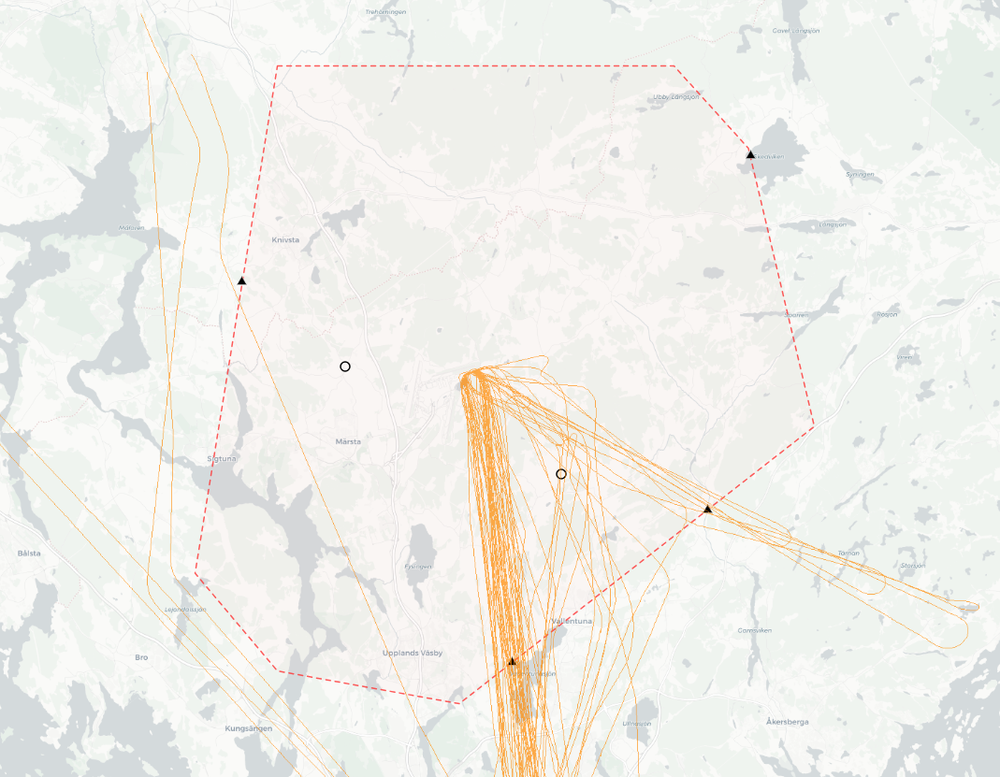
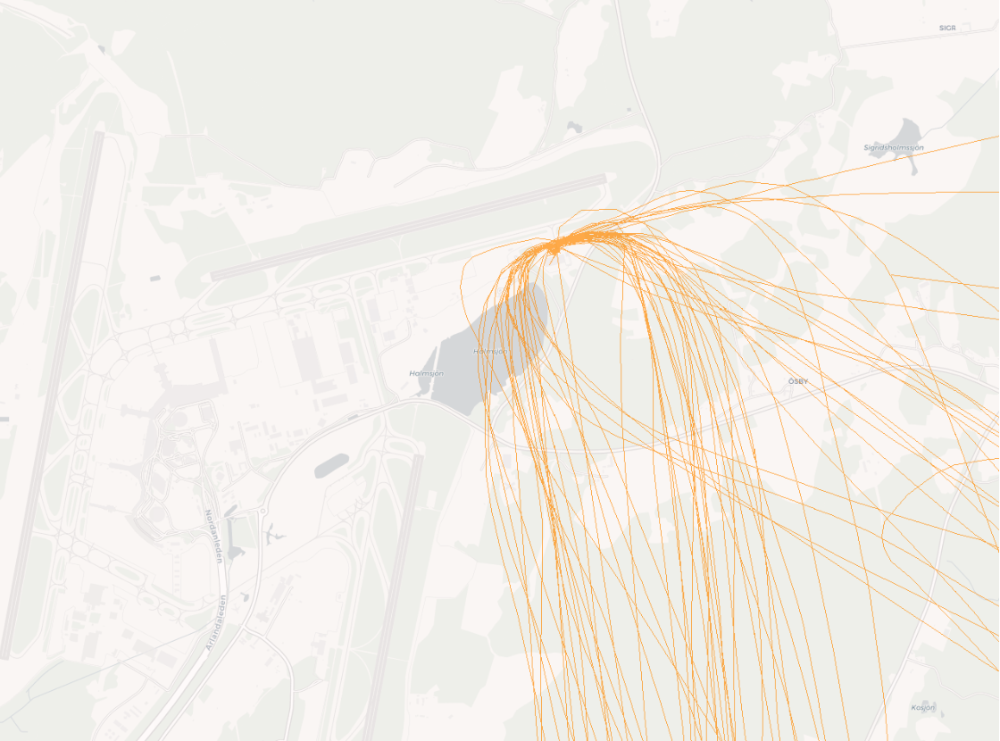
De 61 DFL-rörelserna med Patria som start/destination visar ett mönster som nära liknar POL:s två vanligaste korridorer: mot Vada (öst) och mot Vallentuna (syd-sydost). Inga tydliga avvikelser från dessa två riktningar syns. Precis som polisen håller sig DFL-trafiken väl söder om X:et (08/26) och öster om förlängningen av 19L/01R.
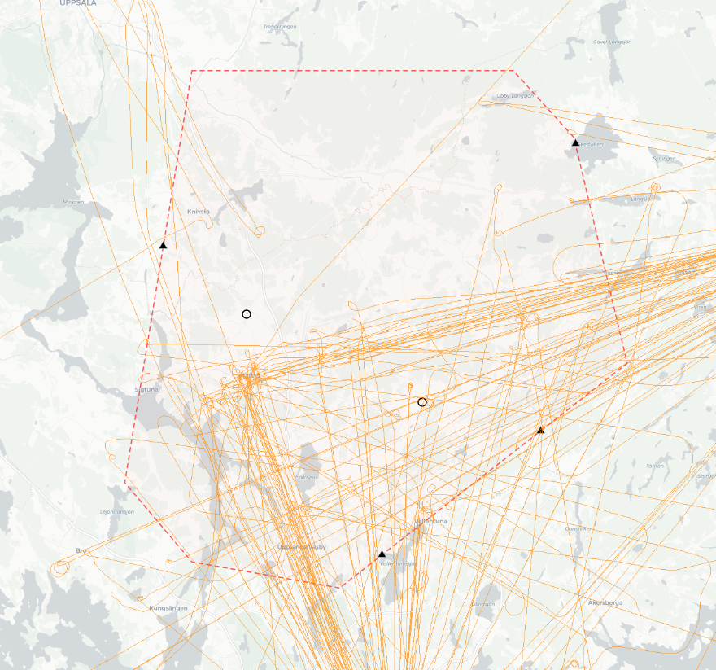
De 138 DFL-rörelserna utan koppling till Patria visar tydliga genomfartsmönster till/från Stockholm respektive till/från Norrtälje. Destinationerna inom CTR är däremot spridda. En stor majoritet av dessa flygningar sker under prioritet – att försöka standardisera ruttmönster för DFL-trafik på prio vore motsägelsefullt, då de har prioritet och följer den väg uppdraget kräver snarare än en standardrutt. Det kan dock noteras att Märsta är en relativt vanlig destination, och att vattenvägen används som rutt för att runda R16.
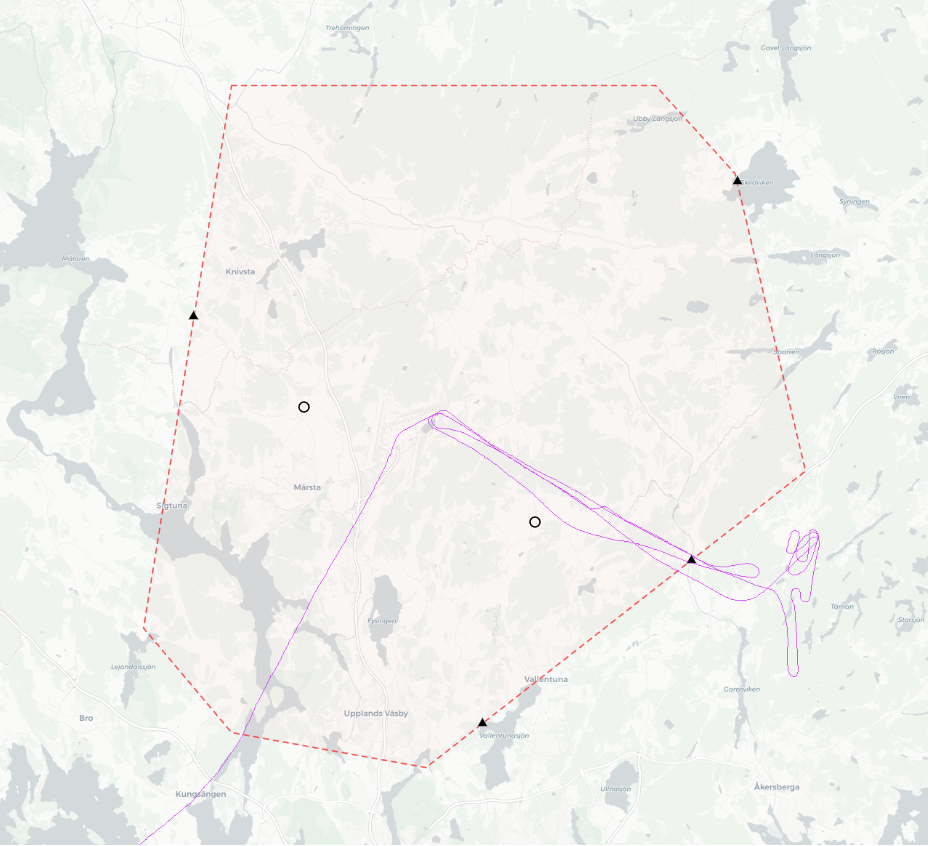
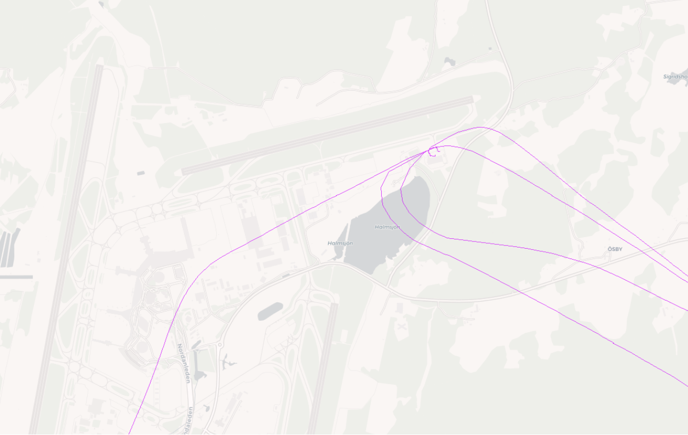
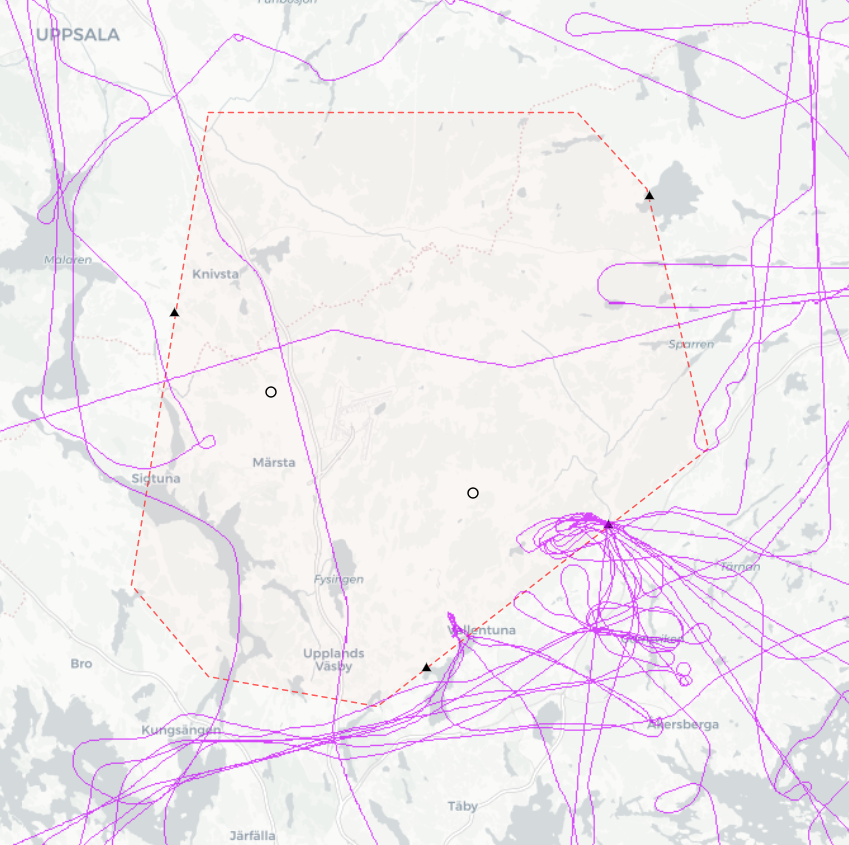
Det tydligaste mönstret för övriga VFR är att Vallentuna och området kring Vada är de vanligaste rutterna. Även vattenvägen används – liksom för DFL – för att runda R16. Utöver dessa stråk är mönstret mer spritt, vilket speglar att dessa flygningar har varierande ursprung och destination.
För ESSA - Stockholm Arlanda återfinns i dagsläget endast följande dokumentation gällande VFR- och helikoptertrafik:
AIP Sverige — AD 2 ESSA, §2.16 Helicopter Landing Area
Any RWY
AIP Sverige — AD 2 ESSA, §5 VFR Trafik
5 VFR trafik
5.1 STOCKHOLM TMA
Procedurerna i ENR 1.2 ska tillämpas.
5.2 STOCKHOLM/Arlanda CTR
Procedurer i ENR 1.2 mom 4 ska tillämpas. För in- och utpasseringspunkter se ESSA VAC.
Förutom dessa korta texter finns även en Visuellinflygningskarta - VAC, som kan ses här nedan.
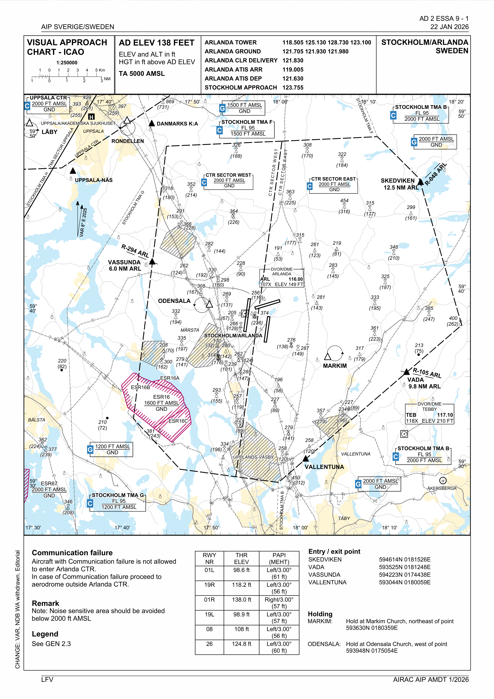
Nedanstående tabell listar de geografiska VFR-referenser som flygledare på Arlanda förväntas kunna och använda sig av vid hantering av VFR trafik. ✓ anger att referensen går att identifiera på nuvarande ESSA VAC-karta; ✗ att den saknas.
| Referens | VAC | |
|---|---|---|
| 1. VFR Rapporteringspunkter | ||
| 1.1 | VADA | ✓ |
| 1.2 | VASSUNDA | ✓ |
| 1.3 | SKEDVIKEN | ✓ |
| 1.4 | VALLENTUNA | ✓ |
| 2. Hållplatser | ||
| 2.1 | MARKIM | ✓ |
| 2.2 | ODENSALA | ✓ |
| 3. Kyrkor (inga namn) | ||
| 3.1 | Markims kyrka | ✓ |
| 3.2 | Odensala kyrka | ✓ |
| 3.3 | Danmark Kyrka | ✓ |
| 3.4 | Husby Långhundra | ✓ |
| 3.5 | Skepptuna | ✓ |
| 3.6 | Lunda | ✓ |
| 3.7 | Kårsta kyrka | ✓ |
| 3.8 | Husby Årlinghundra | ✓ |
| 3.9 | Frösunda | ✓ |
| 4. Navaids | ||
| 4.1 | ARL (DVOR/DME) | ✗ |
| 4.2 | ANW (DME) | ✗ |
| 4.3 | ANE (DME) | ✗ |
| 4.4 | ASE (DME) | ✗ |
| 4.5 | ASW (DME) | ✗ |
| 4.6 | WA (DME) | ✗ |
| 5. Flygfält | ||
| 5.1 | Vassunda Flygfält | ✗ |
| 5.2 | Hova Flygfält | ✗ |
| 5.3 | Vallentuna Flygfält | ✗ |
| Referens | VAC | |
|---|---|---|
| 6. Samhällen | ||
| 6.1 | Märsta | ✓ |
| 6.2 | Sigtuna | ✗ |
| 6.3 | Knivsta | ✗ |
| 6.4 | Gottröra | ✗ |
| 6.5 | Upplands Väsby | ✓ |
| 6.6 | Alsike | ✗ |
| 6.7 | Rosersberg | ✗ |
| 6.9 | Vallentuna (ort) | ✓ |
| 7. Vatten | ||
| 7.1 | Fysingen | ✗ |
| 7.2 | Garnsviken | ✗ |
| 7.3 | Sigtunafjärden | ✗ |
| 7.4 | Valloxen | ✗ |
| 7.5 | Halmsjön | ✗ |
| 7.6 | Vattenvägen | ✗ |
| 8. Vägar | ||
| 8.1 | E4:an | ✗ |
| 8.2 | Väg 77 | ✗ |
| 8.3 | Väg 273 | ✗ |
| 9. Flygplatsinfrastruktur | ||
| 9.1 | Apron L / Patria (FATO 07/25) | – |
| 9.2 | TWR-byggnaden | – |
| 9.3 | Olunda-sektorn | ✗ |
| 9.4 | R16 Kungsängen | ✓ |
✓ = identifierbar på ESSA VAC · ✗ = saknas på ESSA VAC · – = ej tillämpligt
En VAC karta kan inte förväntas innehålla all geografisk information, men den information som anses viktig för att etablera en gemensam lägesuppfattning mellan pilot och ATCO bör prioriteras.
Att hantera VFR, särskilt helikoptertrafik, är inte unik till Arlanda. Genom att analysera hur andra flygplatser utformat procedurer, dokument och kartor kan vi se möjliga förbättringar som även ESSA skulle kunna ta del av.
Nedan följer tre konkreta exempel, två är nordeuropeiska flygplatser med liknande trafikmängder, och en är en fransk flygplats med betydlig mer helikoptertrafik.
| Rörelser/dag | ~600 |
| HKP-rörelser/dag | 5–15 |
| AD elevation | 682 ft |
| CTR | Klass D, GND – 2 500 ft |
| VFR-punkter | 6 rapporteringspunkter, 2 holdings |
| FATO | 01/19 |
Oslo Gardemoen flygplats bär många likheter till Arlanda i antal rörelser (både IFR rörelser och helikooptertrafik). Väsentliga skillnader är att den är belägen ca 500ft högre än Arlanda och är i klass D luftrum.
ENGM AIP innehåller redan i textformat väsentlig mer information för VFR-trafik, och helikoptertrafik i synnerhet.
Utdrag ur AIP Norge AD 2.20 samt 2.22:
AIP Norge — AD 2.20 ENGM, §13 Helicopter Traffic
13.1 FATO/TLOF forms a separate part of the manoeuvring area under the responsibility of ATC. REF Helicopter Route Chart for further information for flying to and from FATO/TLOF.
13.2 RWY AVBL for helicopter operations above D-value 17, and SAR, AMB, MIL and POL after prior coordination with ATC.
13.3 Parking and ground manoeuvring, including hovertaxiing, with helicopter will normally take place west of runway 01L/19R. Other areas may be used for parking helicopters on rescue- and ambulance missions, and after prior coordination for helicopter on other missions for national authorities.
13.4 MIL helicopters to/from the military terminal shall follow the rules described in Aircraft Parking/Docking Chart - Military terminal.
13.5 Due to the close proximity to RWY 01L/19R ARR FATO 01 and DEP FATO 19, pilots must monitor turns and flightpath carefully according to Helicopter Route Chart. The proximity to the RWY does not allow independent operations and may cause DLA for helicopter to and from FATO.
AIP Norge — AD 2.22 ENGM, §8 VFR Flights Within Gardermoen CTR
8 VFR flights within Gardermoen CTR
8.1 Procedures for VFR flights within Gardermoen CTR
a) Special VFR flight, VFR night and transit flight in ENGM CTR are generally not permitted. ATC may, under certain circumstances, grant permission for such flights, based on prior approval.
b) Permission to cross overhead the runways or extended centerlines can not be expected.
c) ATC clearance shall be obtained from Gardermoen TWR.
d) Two-way radio communication shall be established before flight takes place in CTR. REF ENGM AD 2.18.
e) Suspension of VFR flights may be expected under limited visibility or low ceiling.
8.2 Geographical positions for VFR ARR and DEP is specified in AD 2 ENGM 6 - 1 Visual Approach Chart.
8.3 To avoid conflict with TFC using the parallel RWY, the following procedures apply, unless otherwise instructed or cleared by ATC:
- TFC using RWY 01R, 19R or FATO 19 shall make all turns associated with take-off and landing to the right,
- the airspace between the parallel RWY, including the airspace between extended edge lines of RWY, must not be penetrated during APP or DEP,
- permission to cross overhead the RWY or extended CL may not be expected,
- minor delays, for traffic to/from FATO, may be expected due to wake vortex separation RWY 01L/19R.
8.4 ARR VFR flight shall establish two-way radio communication with Gardermoen TWR no later than passing the following reporting points:
- Råsjøen, 601230N 0104810E
- Vormsund, 600918N 0112505E
8.5 When cleared DCT RWY base leg or final, ARR ACFT shall join final within
1 NM FM RWY THR.
When cleared DCT final FATO, helicopter shall be established on final track parallel to and west
of RWY 01L/19R.
8.6 DEP VFR flights shall request start-up from Gardermoen Delivery.
8.7 Standard turn direction after DEP is towards Nannestad when RWY 01L/19R or FATO 01/19 is used, and towards Nordkisa when RWY 01R/19L is used.
8.8 After take-off, commence turn to cleared position/direction at 1200 FT (1700 FT for ACFT with MTOM above 5700 KG), EXC helicopters flying VFR.
8.9 SAR services and ACFT on a police or MIL mission are exempted from the provisions regarding Special VFR, VFR night and transit flights; but shall at all times adhere to the instructions and clearances given by ATC.
Utöver kapitlarna i AIP har ENGM två kartor för VFR trafik. En "klassisk" Visuellinflygninskarta (VAC), och ytterligare en karta för hur just Helikoptrar - var och hur de ska hålla i närheten av flygplatsen och hur de ska flyg in/ut ur FATO.
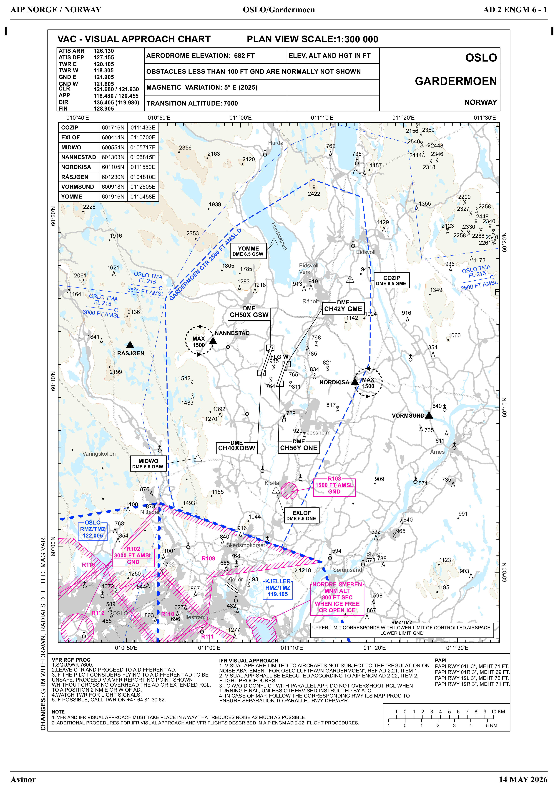
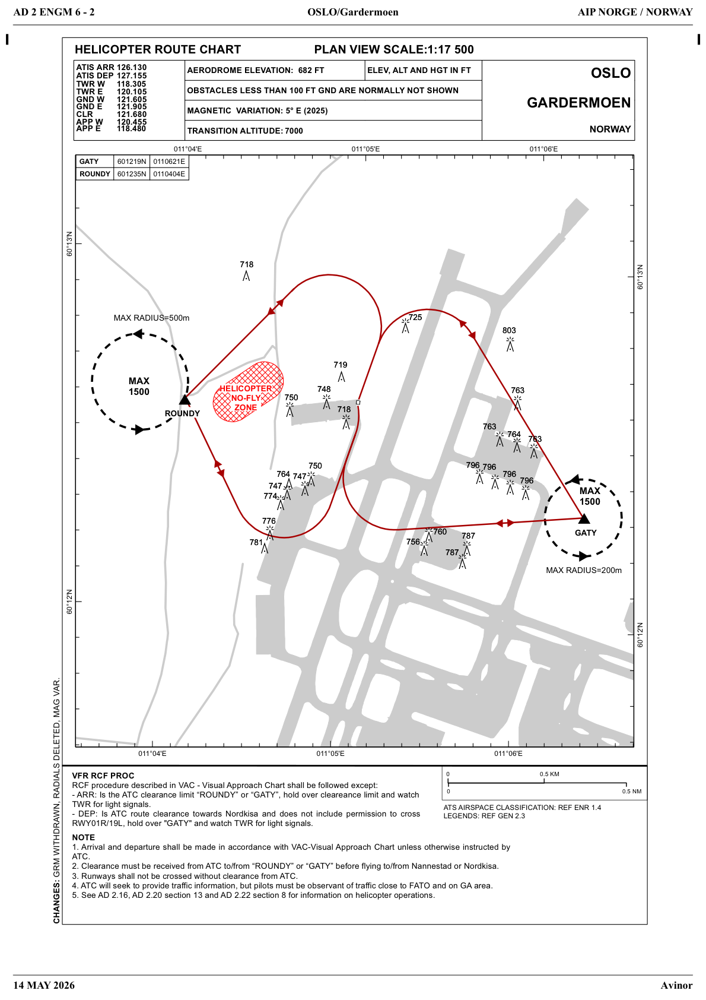
| Rörelser/dag | ~500 |
| HKP-rörelser/dag | 5–10 |
| AD elevation | 180 ft |
| CTR | Klass D, GND – 1 300 ft |
| VFR-punkter | 5 rapporteringspunkter, 4 holdings |
| FATO | 16/34 |
Helsinki Vantaa publicerar lite mer begränsad text än Oslo med hänsyn till VFR:er och Helikoptertrafik.
AIP Finland — AD 2 EFHK, §6 Helicopter Operations
6.1 Operating on FATO H16/H34
6.1.1. FATO H16/H34 is within ATC service boundary. When performing take-offs from H16 or landings on H34, pilots must exercise caution and visually confirm the absence of obstacles in the front sector.
Outside the ATC service boundary at APN 4 and between taxiways CL and CN there may be ground traffic unknown to ATC. REF AIP, EFHK AD 2.5 - 1 (APDC).
AIP Finland — AD 2 EFHK, §8 Training, Inspection and VFR Flights Within EFHK CTR/TMA
8.1. Training and inspection IFR and VFR flights, local IFR and VFR flights and flights with hot-air balloons in EFHK TMA are subject to ATC permission and will be accepted for justified reasons only. The decisions for granting a permission will be based on the current and expected traffic situation and the judgement of the level of noise impact caused by such activity.
The following shall be complied:
- The schedule and program of the flight shall be coordinated with Helsinki-Vantaa approach supervisor, TEL +358 9 6151 3324.
- A flight plan in written shall be filed. The flight program shall be indicated in the flight plan, item 18 RMK.
- The flight will be accepted the traffic situation permitting. During rush-hours at Helsinki-Vantaa flights are subject to limitations.
- In case of VFR flight departing inside the EFHK CTR, the pilot shall request clearance before airborne on EFHK TWR frequency or by calling +358 9 6151 3322.
8.2 Additional restrictions during parallel approaches
Training and inspection IFR and VFR flights, local (IFR and VFR) and any VFR flights are not allowed at EFHK CTR and TMA during parallel approaches.
Excluding:
- IFR flights, subject to restrictions, solely either departing from EFHK or arriving at EFHK, which have received an airport slot; taking in account the published performance requirements during independent parallel operations
- SAR or authorized flights
- State aircraft
- Emergency situations
- Flights which do not affect conducting the parallel approaches.
Däremot har de en tydligare och mer detaljrik Visuellinflygningskarta (VAC) samt en mer detaljrik karta för Helikoptrar. Den visar tydligt gällande höjder, rapporteringspunkter, geografiska referenser och lokala sektorer inom CTR. Framförallt ritas även ut helikopterspecifika standardrutter till/från FATO.
De har även en dedikerad IFR Inflygningskarta för Helikopter på 04R. (visas ej här men kan ses i deras eAIP)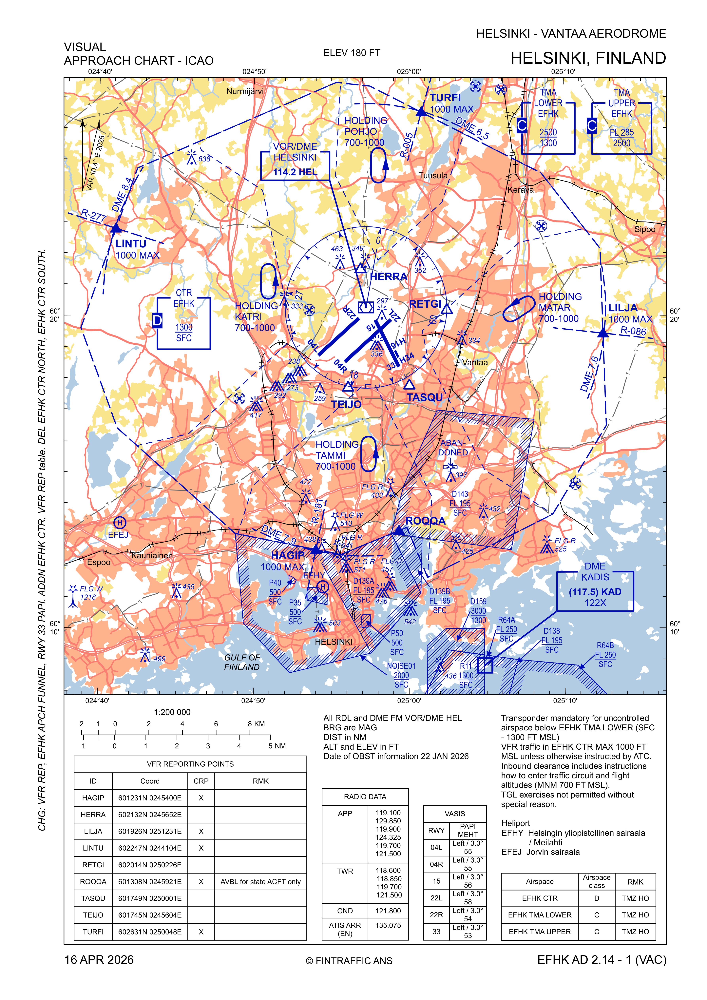
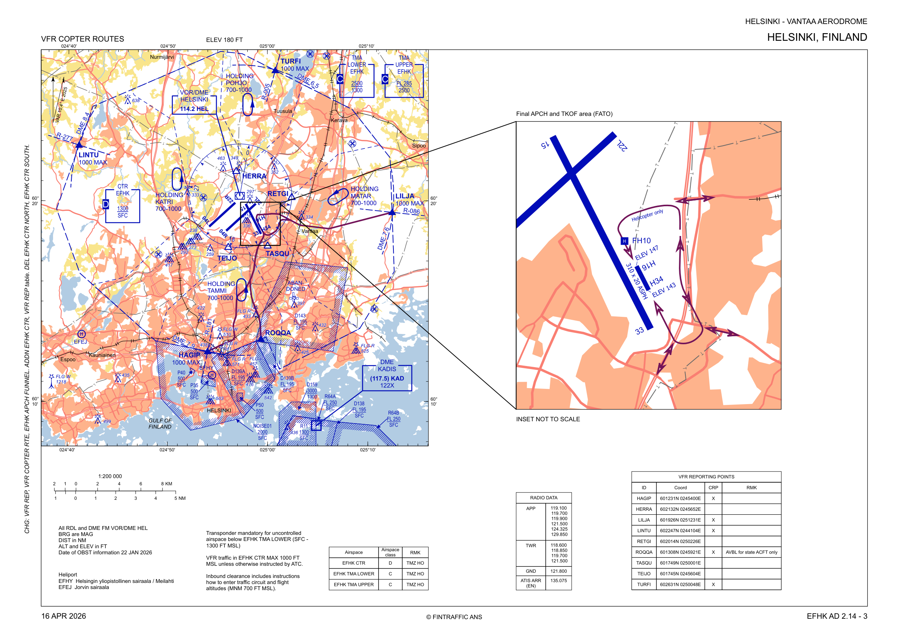
| Rörelser/dag | ~800 (sommartopp) |
| HKP-rörelser/dag | 50–150 |
| AD elevation | 12 ft |
| CTR | Klass D, GND – 3 500 ft |
| VFR-punkter | 20 rapporteringspunkter |
| FATO | MS och ME (2 st) |
Nice Côte d'Azur är en intressant jämförelse då den har ungefärligt likadana trafiksiffror för IFR trafik, men betydligt större mängd helikoptertrafik
Detta återspeglas i deras många och väldetaljerade procedurer och dokument som blir hela 8 kartor och 7 sidor text i AIP för att skapa ett gediget underlag för hur helikoptrar förväntas flyga inom CTR samt till/från flygplatsen
Klicka på valfri bild nedan för att se text-delen av LFMN AIP
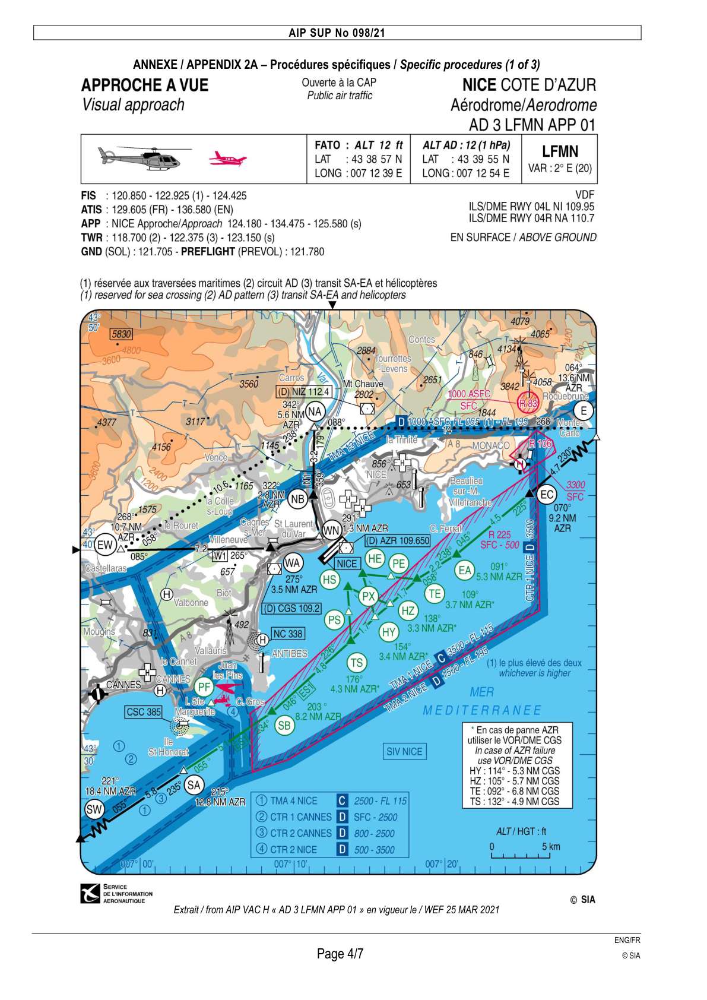
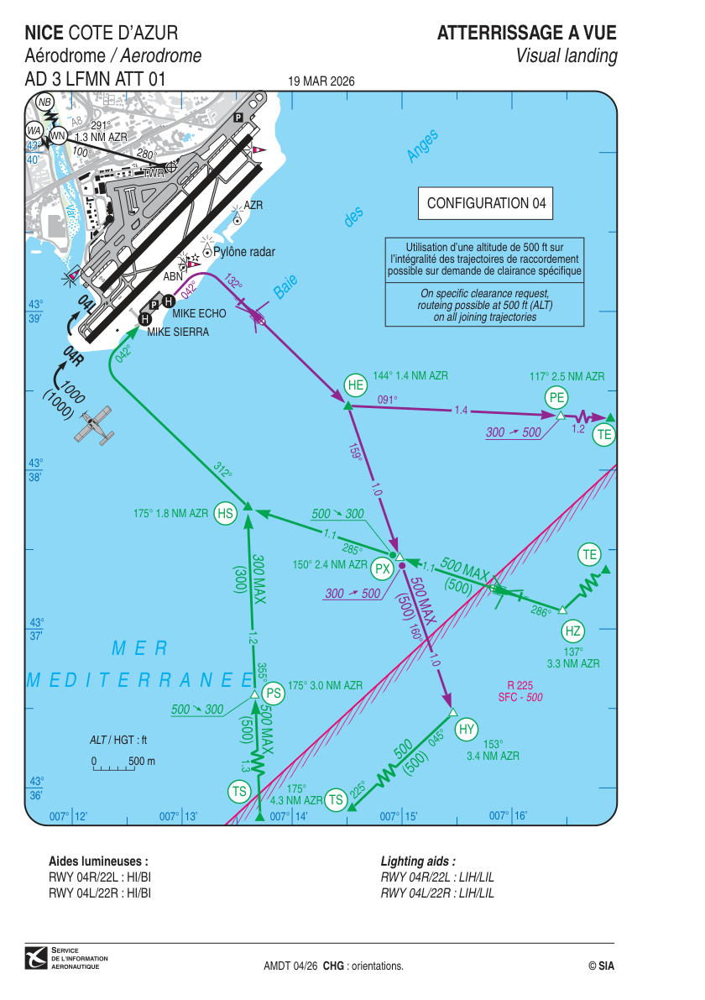
Procedurerna är gedigna med både tydliga kartor med reelvant information, och kompletterande detaljer i text i AIP:n där:
En viktigt påminnelse är att syftet med procedurer och dokumentation är enbart att bibehålla hög säkerhet vid ökade trafikmängder.
När flygplatser får ökad IFR trafik byggs dem ut och nya procedurer och standardförfaranden (SID:ar, taximönster, flöden, rutiner) införs som beskrivs med kartor och text i AIP:n. På så sätt kan växande trafikmängder hanteras med bibehållen eller ökad säkerhet.
På samma sätt kan man se att flygplatser med växande helikoptertrafik kan också uppdatera, anpassa och införa nya standarder, flöden och rutiner för att kunna hantera säkert fler rörelser.
I denna del jämförs därför de skillnader mellan Arlanda och ovanlistade 3 flygplatser för att se vad som skulle kunna göras annorlunda på Arlanda för att hantera fler helikoptrar.
| Funktion | ESSA Arlanda | ENGM Oslo | EFHK Vantaa | LFMN Nice |
|---|---|---|---|---|
| VAC Karta | ✓ | ✓ | ✓ | ✓ |
| Skala | 1:250 000 | 1:300 000 | 1:200 000 | 1:225 000 |
| Rapporterings-punkter (CRP = obligatoriska) | 4 st (inga icke CRP) | 8 st (varav 4 CRP) | 9 st (varav 5 CRP) | 20 st (varav 18 CRP) |
| Geografiska referenser | Kyrkor (inga namn), sjöar (inga namn), Tätorter (bara 2 med namn), tågspår, högspännings-ledningar, vägar (inga namn) | Kyrkor (inga namn), sjöar (1 namn), tätorter (10 med namn), vägar (inga namn) | Inga kyrkor, sjöar (inga namn), tätorter (inga namn), tågspår, vägar (inga namn), sjukhus, flygfält, RC-klubbar, sektorer för skydd av APCH | Inga kyrkor, vattendrag (med namn), tätorter (med namn), tågspår, vägar, högspännings-ledningar, helipads, RC-klubbar, terränghöjder |
| Procedurer vid COMM FAIL | ✓ | ✓ | ✓ | ✓ |
| Höjdrestriktioner | CTR-höjder | CTR-höjder, Holding-maxhöjder | CTR-höjder, Holding min-maxhöjder, minhöjd i CTR (700ft) | CTR-höjder, terränghöjder |
| Utmarkerade rutter | – | – | – | Tydligt utmarkerade rutter för både VFR och HKP-trafik, både till/från flygplatsen eller för passage. |
| Detaljerad COPTER-karta | – | ✓ | ✓ | ✓ |
| Upplösning | – | 1:17 500 | u/n | 1:30 000 |
| Kartor | – | 1 st (in-/utflygning FATO) | 2 st (rutter i CTR + in-/utflygning FATO) | 7 st (rutter + in-/utflygning FATO + rampkarta runt FATO) |
| AIP Text | - | ✓ | ✓ | ✓ |
| Detaljerade procedurer på marken | – | Kapitlar 13.1, 13.3, 13.4 och 13.5 samt 8.6 | Kapitlar 6.1 samt 8.1 | Flera detaljerade paragrafer, om ramp, parkering, hovring, krav och klareringar |
| Särskilda regler i luften | – | Kapitlar 13.2, 8.1 - 8.5 samt 8.7 - 9 | Kapitel 8.2 samt textdetaljer på kartorna | Flera detaljerade paragrafer om rutterna till/från FATO samt inom CTR, beskrivningar på Reporting Points, regler för inpassage/utpassage inkl. höjder och transponderkoder |
| Höjdrestriktioner, väderminima eller avståndskrav | – | Kapitlar 8.1 (SVFR), 8.5 (where to join FATO final), 8.8 (höjd) samt 8.9 (SVFR) | I text-delarna på kartan finns höjdrestriktioner (både min-max) | Mängder med tydligsa siffror och specifikationer på höjder och avstånd och väderminima både i text och på kartorna vid alla faser av en VFR flygning |
Standarder och inarbetade publicerade procedurer som piloter kan ta del av ökar förutsägbarheten. Och förutsägbarhet gör det lättare för både piloter och flygledare att dela samma lägesbild och förenkla de klareringar som behövs för att uppnå de flöden man eftersträvar.
Ett förslag för att förbättra hanteringen av helikoptertrafiken på Arlanda vore därför att ta inspiration av ENGM, EFHK och LFMN, ta hänsyn till våra begränsningar och mönster och skapa anpassade rutter och procedurer som kan publiceras i AIP så att både flygledare och piloter kan arbeta mer enhetligt, förutsägbart och säkert
För detta föreslås att:
Exempel och utkast på ovanstående visas nedan. Kom ihåg att dessa är förslag. Avsteg från standardrutter och procedurer är tillåtna. Dessa är till för att öka förutsägbarheten, skapa en gemensam lägesbild och gemensamma förväntningar för att förstärka säkerheten. INTE för att låsa trafiken på specifika rutter eller spår om andra och bättre lösningar finns för den specifika situationen.
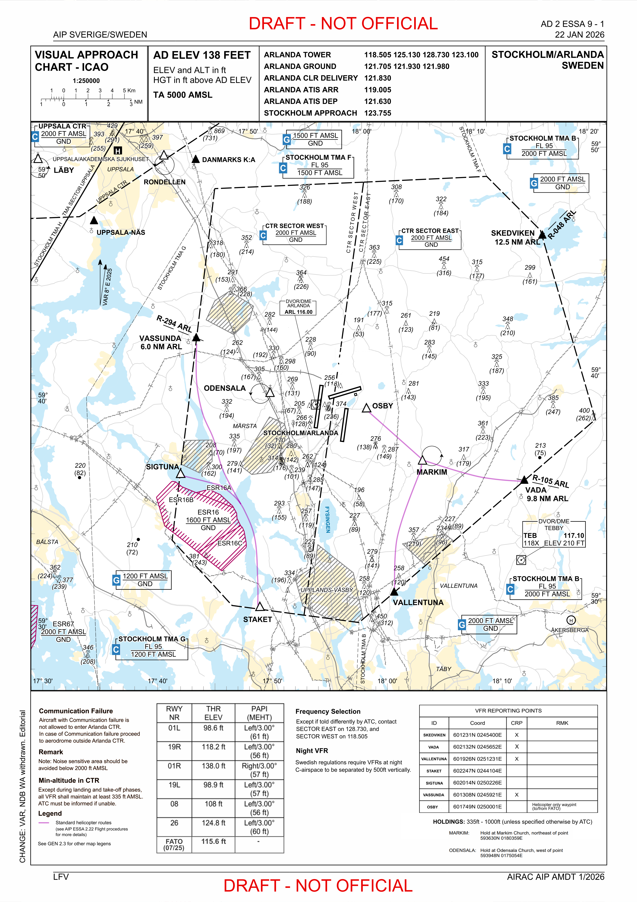
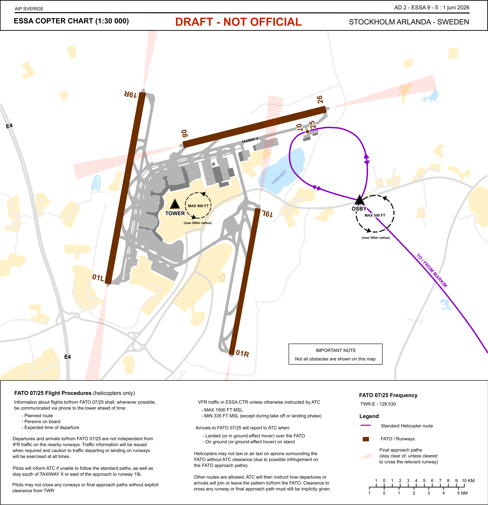
Befintlig VAC (Visual Approach Chart) för Arlanda är mer inriktad på IFR trafik som gör visuella inflygningar, eller fix-winged VFR:er än helikoptertrafik. Kartan överväldigas visuellt av hinder (master, kyrkor och annat).
Den har många siffror och information om navigationsmedel, men verkar inte anpassad för att hjälpa helikopterpiloter navigera inom ESSA CTR eller till/från FATO enligt de geografiska referenser eller procedurer ESSA flygledare brukar använda sig av.
Detta syns tydligt i andra länders VAC-kartor där kartorna anpassats mer specifikt till ändamål, och har framförallt ofta kompletteringskartor för t.ex. just helikoptertrafik
Genom följande punkter moderniseras kartan. Den anpassas till existerande trafikflöden, och ger mer lättläst visuell information, samt kompleterrande procedurer:
En än gång är det viktigt att påpeka att detta ersätter inte befintliga regler eller separationsansvar från varken piloter eller flygledare.
Föreslagna avgångs- och ankomstrutter är standarder och förväntningsbilder, inte rigida klareringar.
4 nya punkter införs: TOWER, SIGTUNA, STAKET och OSBY
Syftet med dessa är att möjliggöra enkla och korta klareringar (på både svenska och engelska) till VFR:er, och främst helikoptrar (då dessa utgör en väldigt betydande del av Arlandas VFR trafik)
SIGTUNA och STAKET specifikt gör det lättare att klarera VFR:er som vill använda det som kallas för "Vattenvägen" av flygledare men som inte är ett officiellt och publicerat begrepp.
OSBY och TOWER införs för att standardisera förfarandet kring avgångar och ankomster till "Patria" (det som nu blir FATO 07/25)
Standardrutterna som föreslås är tänkt att förenkla och standardisera förfarandet, delvis för passage vid R16, men framförallt för avgångar och ankomster till FATO:
| Steg | Beskrivning | Höjd |
|---|---|---|
| Avgång | FATO → OSBY → (MARKIM om så önskas) → VADA | Stiga till 500 ft MSL mot OSBY – därefter 1000 ft MSL mot MARKIM, och därefter 1500ft eller lägre mot VADA |
| Ankomst | VADA → (MARKIM vid behov) → OSBY → FATO. Håll vid OSBY (eller tidigare om så instruerad av ATC). | Som högst 1000 ft MSL vid MARKIM och 500 ft MSL vid OSBY (om inte klarerad annorlunda av ATC) |
| Notering | Vid in-/utflygning av FATO till/från OSBY, håll söder om X:et och håll öster om 01R/19L och dess förlängda linje. Anmäl till ATC om detta är ej möjligt. | (Markim ger sida mot trafik till/från 08/26) |
| Steg | Beskrivning | Höjd |
|---|---|---|
| Avgång | FATO → OSBY → (MARKIM om så önskas) → VALLENTUNA | Stiga till 500 ft MSL mot OSBY – därefter 1000 ft MSL mot MARKIM, och därefter 1500ft eller lägre mot VALLENTUNA |
| Ankomst | VALLENTUNA → (MARKIM vid behov) → OSBY → FATO. Håll vid OSBY (eller tidigare om så instruerad av ATC). | Som högst 1000 ft MSL vid MARKIM och 500 ft MSL vid OSBY (om inte klarerad annorlunda av ATC) |
| Notering | Vid in-/utflygning av FATO till/från OSBY, håll söder om X:et och håll öster om 01R/19L och dess förlängda linje. Anmäl till ATC om detta är ej möjligt. | (Markim ger sida mot trafik till/från 01R/19L) |
| Steg | Beskrivning | Höjd |
|---|---|---|
| Passage | SIGTUNA / VASSUNDA → STAKET | 1500 ft MSL eller lägre (500 ft MSL kan förväntas om 01L/19R används för reguljärtrafik) |
| Passage | STAKET → SIGTUNA / VASSUNDA. | 1500 ft MSL eller lägre (500 ft MSL kan förväntas om 01L/19R används för reguljärtrafik) |
| Notering | Kom ihåg att informera om R16. VFR trafik bör undvika att flyga över tätort markerade på VAC. Namnet "Vattenvägen" används inte officiellt då den inte fungerar på engelska |
| Steg | Beskrivning | Höjd |
|---|---|---|
| Avgång | FATO → klarering korsa 19L → TOWER → klarering korsa 19R → Västerut | 500 ft MSL eller lägre från FATO till TOWER. |
| Ankomst | VASSUNDA/SIGTUNA → östlig kurs → (ODENSALA) → klarering korsa 19R → TOWER → klarering korsa 19L → FATO | 500ft MSL vid TOWER och mot FATO efter TOWER. |
| Notering | Hålla söder om X:et vid behov |
Andra rutter är möjliga. Dessa är enbart standardförfarandet. Dessa tar inte bort varken piloten eller flygledarens möjlighet att flyga andra mer direkt rutter när omständigheter tillåter. Då specificeras trafikvarv (höger/vänster) och trafik pekas ut precis som idag.
I linje med ENGM-principen föreslås att följande publiceras explicit:
Regel: Helikoptrar ska inte korsa någon landningsbana (eller förängd linje / kort final av landningsbana i anslutning till flygplatsen), utan uttrycklig klarering, oavsett om publicerad rutt föreligger.
Det är inte bara rutter i en kontrollzon som kan avhjälpa hanteringen av VFR trafik, men även kontrollzonens utformning och storlek.
På datanalysen av mönster av flygningar syns att en hel del flygningar sker i utkanten på kontrollzonen, men SVFR regler och krav av separation kan skapa komplexa situationer för både piloter och flygledare. En jämförelse av de 4 flygplatser i denna rapport visar att Arlanda har en väldig stor CTR
| Flygplats | Luftrumsklass | CTR area (km2) |
|---|---|---|
| ESSA | Klass C | Ca 1000 km2 |
| ENGM | Klass D | Ca 700 km2 |
| EFHK | Klass D | Ca 400 km2 |
| LFMN | Klass D | Ca 250 km2 |
Detta visar att det kan finnas potential att se över Arlandas kontrollzon. En minskning på även bara 25% skulle eliminera ca 15% av VFR trafiken som berör kontrollerad luftrum. detta skulle förenkla arbetet för Arlanda samt frigöra luftrum till nyttan av allänheten.
OBS! En minskning av ytan på kontrollzonen skulle kunnas göra utan att minska skyddet på IFR trafikens (avgångar och ankomster) och hjälpa tillgängligöra mer luftrum till allmänheten
| Åtgärd |
|---|
| Intern granskning av detta dokument, ESSA Ledning / ROM |
| Granskning och genomgång med DFL och POL för feeedback och revision |
| Beställa av Swedavia / AIP uppdateringar och kartor för publicering |
| AIP SUP med nya procedurer och waypoints |
| Permanent AIP-sektion AD 2 ESSA (VAC Heli el. AD 2.24) |